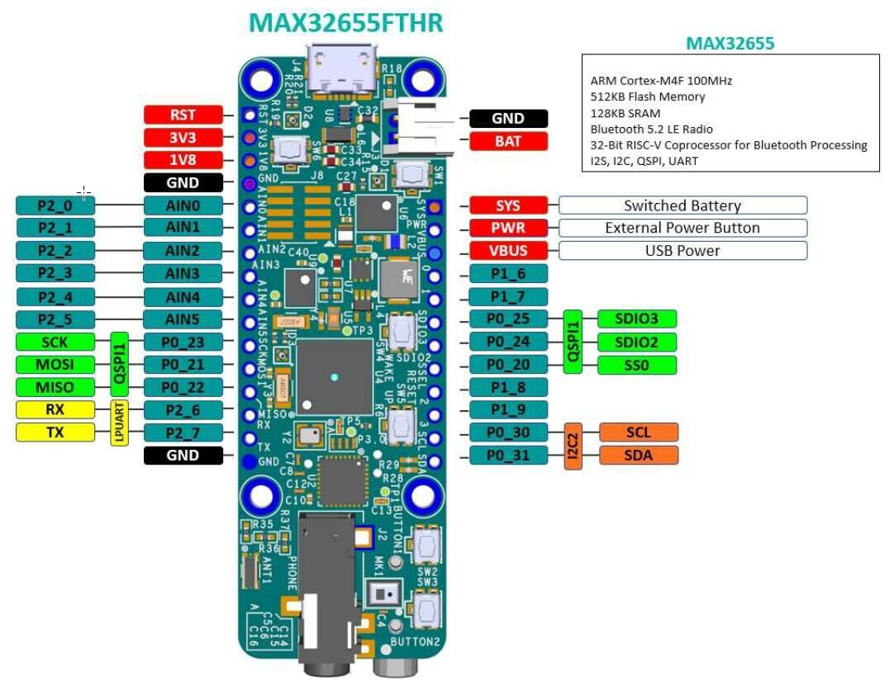
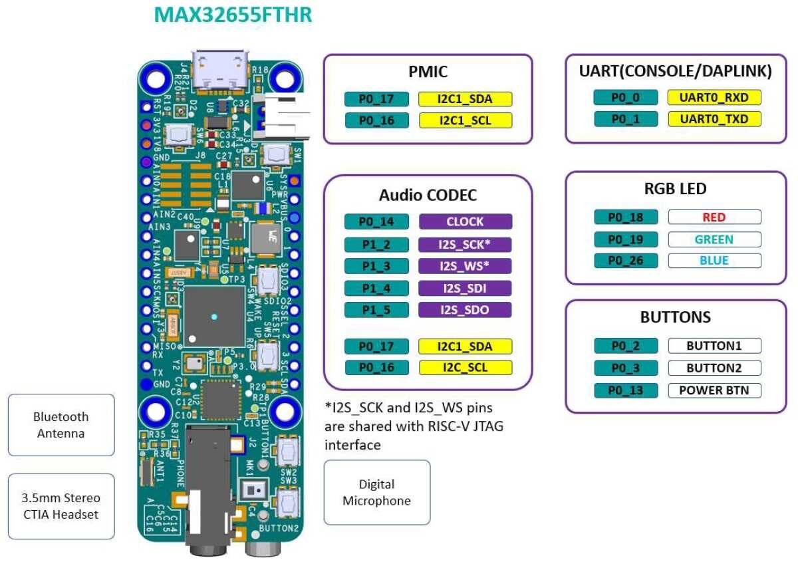
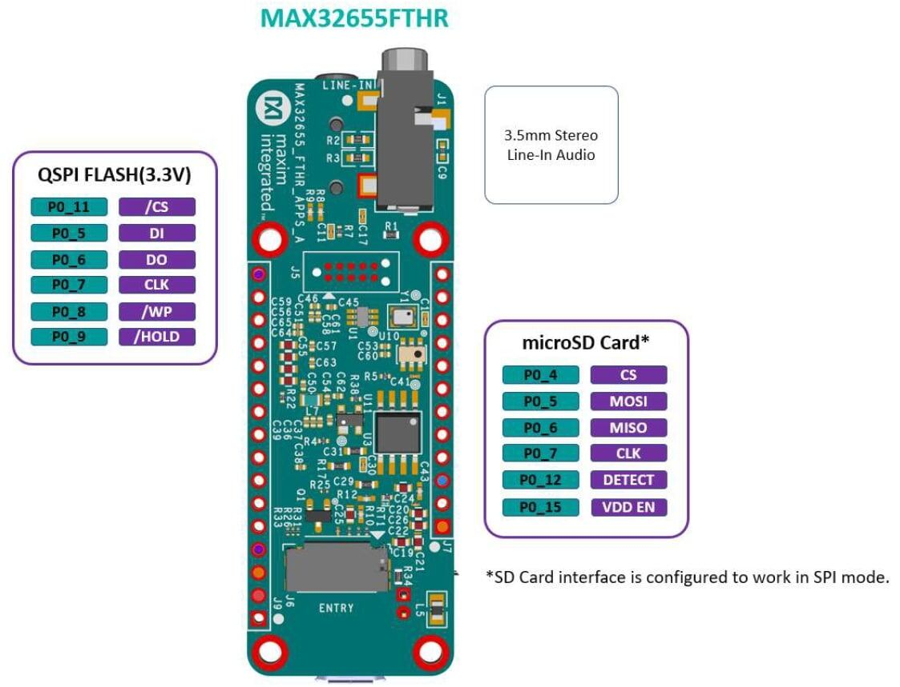

MAX32655FTHR
Overview
The MAX32655FTHR is a rapid development platform to help engineers quickly implement ultra low-power wireless solutions using MAX32655 Arm© Cortex®-M4F and Bluetooth® 5.2 Low Energy (LE). The board also includes the MAX20303 PMIC for battery and power management. The form factor is a small 0.9in x 2.6in dual-row header footprint that is compatible with Adafruit Feather Wing peripheral expansion boards. The board includes a variety of peripherals, such as a digital microphone, lowpower stereo audio CODEC, 128MB QSPI Flash, micro SD card connector, RGB indicator LED, and pushbutton. The MAX32655FTHR provides a power-optimized flexible platform for quick proof-of-concepts and early software development to enhance time to market. Go to https://www.analog.com/MAX32655FTHR to get started developing with this board.
The Zephyr port is running on the MAX32655 MCU.



Hardware
MAX32655 MCU:
Ultra-Low-Power Wireless Microcontroller - Internal 100MHz Oscillator - Flexible Low-Power Modes with 7.3728MHz System Clock Option - 512KB Flash and 128KB SRAM (Optional ECC on One 32KB SRAM Bank) - 16KB Instruction Cache
Bluetooth 5.2 LE Radio - Dedicated, Ultra-Low-Power, 32-Bit RISC-V Coprocessor to Offload Timing-Critical Bluetooth Processing - Fully Open-Source Bluetooth 5.2 Stack Available - Supports AoA, AoD, LE Audio, and Mesh - High-Throughput (2Mbps) Mode - Long-Range (125kbps and 500kbps) Modes - Rx Sensitivity: -97.5dBm; Tx Power: +4.5dBm - Single-Ended Antenna Connection (50Ω)
Power Management Maximizes Battery Life - 2.0V to 3.6V Supply Voltage Range - Integrated SIMO Power Regulator - Dynamic Voltage Scaling (DVS) - 23.8μA/MHz Active Current at 3.0V - 4.4μA at 3.0V Retention Current for 32KB - Selectable SRAM Retention + RTC in Low-Power Modes
Multiple Peripherals for System Control - Up to Two High-Speed SPI Master/Slave - Up to Three High-Speed I2C Master/Slave (3.4Mbps) - Up to Four UART, One I2S Master/Slave - Up to 8-Input, 10-Bit Sigma-Delta ADC 7.8ksps - Up to Four Micro-Power Comparators - Timers: Up to Two Four 32-Bit, Two LP, TwoWatchdog Timers - 1-Wire® Master - Up to Four Pulse Train (PWM) Engines - RTC with Wake-Up Timer - Up to 52 GPIOs
Security and Integrity - Available Secure Boot - TRNG Seed Generator - AES 128/192/256 Hardware Acceleration Engine
External devices connected to the MAX32655FTHR:
Audio Stereo Codec Interface
Digital Microphone
PMIC and Battery Charger
A 128Mb QSPI flash
Micro SDCard Interface
RGB LEDs
Push Buttons
Supported Features
The max32655fthr board supports the hardware features listed below.
- on-chip / on-board
- Feature integrated in the SoC / present on the board.
- 2 / 2
-
Number of instances that are enabled / disabled.
Click on the label to see the first instance of this feature in the board/SoC DTS files. -
vnd,foo -
Compatible string for the Devicetree binding matching the feature.
Click on the link to view the binding documentation.
max32655fthr/max32655/m4 target
Type |
Location |
Description |
Compatible |
|---|---|---|---|
CPU |
on-chip |
ARM Cortex-M4F CPU1 |
|
on-chip |
MAX32 RV32 core1 |
||
ADC |
on-chip |
ADI MAX32 ADC 10-Bits1 |
|
Clock control |
on-chip |
||
on-chip |
MAX32 Global Control1 |
||
Counter |
on-chip |
ADI MAX32 counter6 |
|
on-chip |
ADI MAX32 compatible Counter RTC1 |
||
on-chip |
ADI MAX32 Wake-Up Timer is a unique instance of a 32-bit timer that can wake up the device from sleep, standby and backup modes1 |
||
DMA |
on-chip |
ADI MAX32 DMA1 |
|
Flash controller |
on-chip |
MAX32XXX flash controller1 |
|
GPIO & Headers |
on-chip |
MAX32 GPIO4 |
|
on-board |
GPIO pins exposed on Adafruit Feather headers1 |
||
I2C |
on-chip |
||
I2S |
on-chip |
Analog Devices MAX32 series I2S controller1 |
|
Input |
on-board |
Group of GPIO-bound input keys1 |
|
Interrupt controller |
on-chip |
ARMv7-M NVIC (Nested Vectored Interrupt Controller)1 |
|
LED |
on-board |
Group of GPIO-controlled LEDs1 |
|
Mailbox |
on-chip |
ADI MAX32 SEMA Mailbox1 |
|
MTD |
on-chip |
Flash node1 |
|
on-board |
Properties supporting Zephyr spi-nor flash driver (over the Zephyr SPI API) control of serial flash memories using the standard M25P80-based command set1 |
||
Pin control |
on-chip |
MAX32 Pin Controller1 |
|
PWM |
on-chip |
ADI MAX32 PWM4 |
|
RNG |
on-chip |
ADI MAX32XXX TRNG1 |
|
Serial controller |
on-chip |
||
SPI |
on-chip |
ADI MAX32 SPI2 |
|
SRAM |
on-chip |
Generic on-chip SRAM4 |
|
Timer |
on-chip |
ADI MAX32 timer7 |
|
on-chip |
ARMv7-M System Tick1 |
||
1-Wire |
on-chip |
ADI MAX32xxx MCUs 1-Wire Master1 |
|
Watchdog |
on-chip |
LEDs
There are three RGB LEDs on the MAX32655FTHR board
LED1 (D1)
Connected to the MAX32655FTHR GPIO ports. This LED can be controlled by user firmware. Port 0.18: Red color Port 0.19: Green color Port 0.26: Blue color
LED2 (D2)
Connected to MAX20303 PMIC LEDx outputs. These LEDs can be controlled through I2C commands. They also can be configured as charge status indicators by issuing I2C commands.
LED3 (D3)
DAPLink adapter MAX32625 status LED. Controlled by the DAPLink adapter and cannot be used as a user LED.
Programming and Debugging
The max32655fthr board supports the runners and associated west commands listed below.
| flash | debug | attach | debugserver | rtt | |
|---|---|---|---|---|---|
| openocd | ✅ (default) | ✅ (default) | ✅ | ✅ | ✅ |
Flashing
The MAX32625 microcontroller on the board is flashed with DAPLink firmware at the factory. It allows debugging and flashing the MAX32655 Arm Core over USB.
Once the USB cable is connected to your host computer, then you can simply run the
west flash command to write a firmware image into flash. To perform a full erase,
pass the --erase option when executing west flash.
Debugging
Please refer to the Flashing section and run the west debug command
instead of west flash.